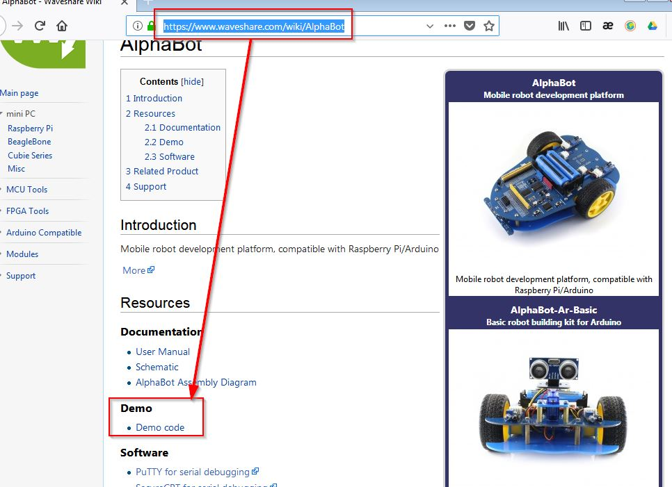

MJPEG-Streamer
Es una aplicación que simplemente captura imágenes (frames) en JPEG y transmitirlas vía HTTP. Su página oficial de instalación.
Opción A Instalación desde repositorios
- Actualmente está un poco parado el proyecto, tal y como dice aquí, pero se puede instalar desde este respositorio Github que sigue vivo y que tiene las instrucciones para su instalación: https://github.com/jacksonliam/mjpg-streamer
- En este tutorial está muy bien hecho y explica todo paso a paso su instalación, pero no utiliza un repositorio oficial.
Opción B Instalación desde Waveshare
Desde la página oficial de Alphabot tiene también el software y su guia de instalación, tiene algunos pasos algo complejos, yo lo hice y doy fe que funcionó:
1.- Añadimos la siguiente línea en el archivo modules que está en la carpeta etc
bcm2835-v4l2
Si estas en una terminal, puedes ejecutar un editor de texto
sudo nano /etc/modules
añadir
bcm2835-v4l2
Grabar con Ctrl+O con el mismo nombre (sobrescribiendo) y salir con Ctrl+X
2.- Reiniciamos para que cargue el módulo señalado
3.- Instalamos estas librerías:
sudo apt-get install libv4l-dev libjpeg8-dev
sudo apt-get install subversion
4.-Descargar MJPEG-Streamer En la página https://www.waveshare.com/wiki/AlphaBot tienes Software demo y también el software WepIOPi y MJPEG-Streamer:

Se descargará un fichero comprimido que lo descomprimiremos, y lo llevaremos a la Raspberry ¿no sabes cómo? es porque no leístes esto.
5.-Entrar en el directorio donde esta mjpeg-streamer, abrimos una terminal con el botón derecho en esa carpeta:
6.-Compilamos la librería:
make USE_LIBV4L2=true clean all sudo make install
Si sale bien, saldrá el mensaje : No rule to make target 'clear'. Stop. . Si sale mal, tienes que entrar en el fichero que está en mjpg-streamer/plugins/input_uvc/input_uvc.c y cambiar donde pone V4L2_PIX_FMT_MJPEG por V4L2_PIX_FMT_YUYV

Alphabot por varios autores bajo licencia Creative Commons Reconocimiento-NoComercial-CompartirIgual 4.0 Internacional License.